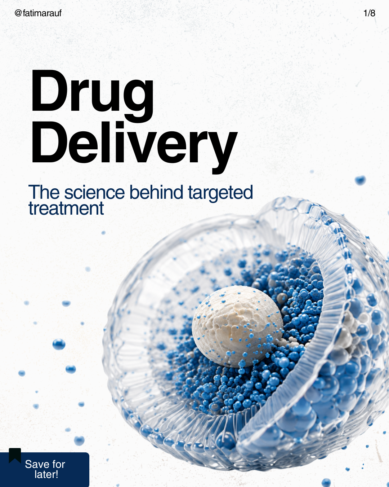
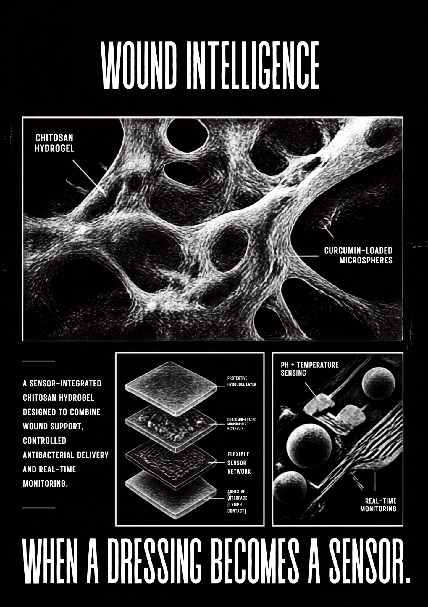
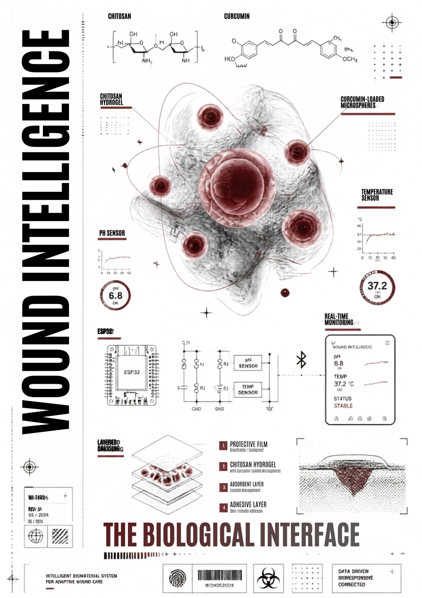
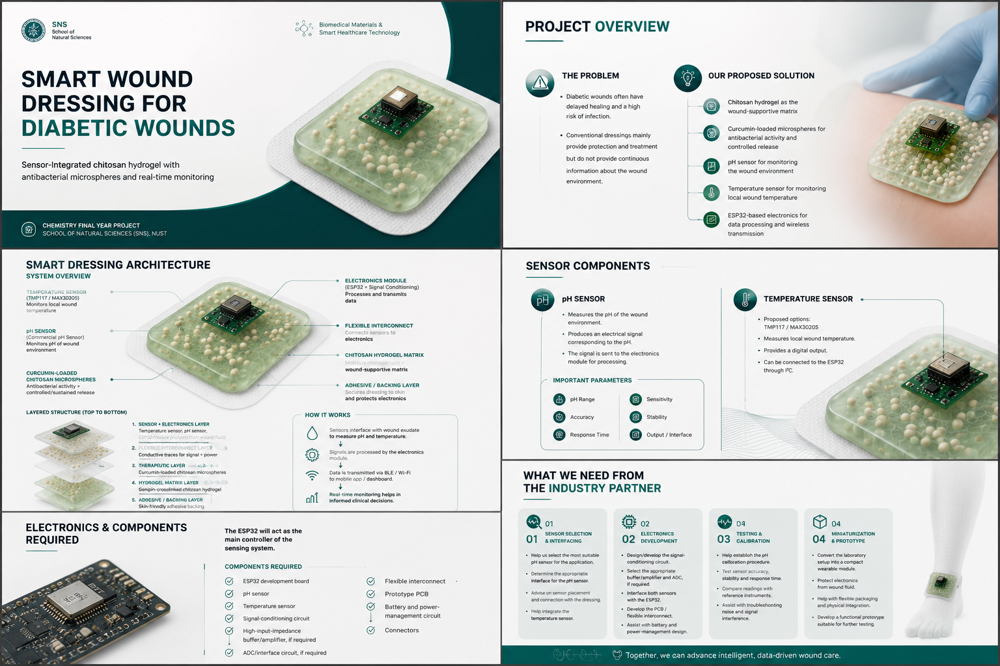
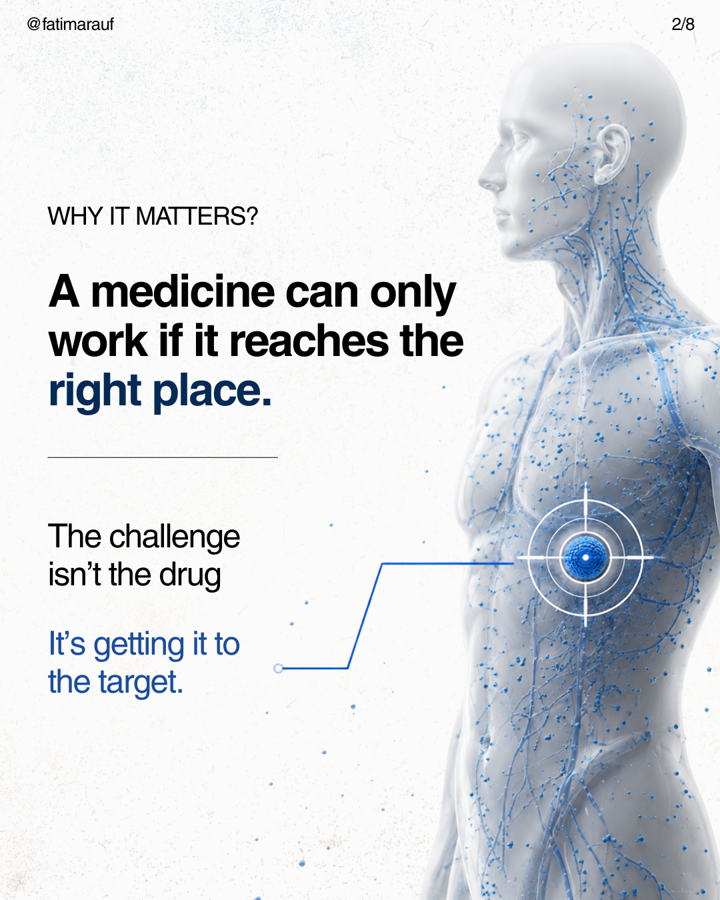
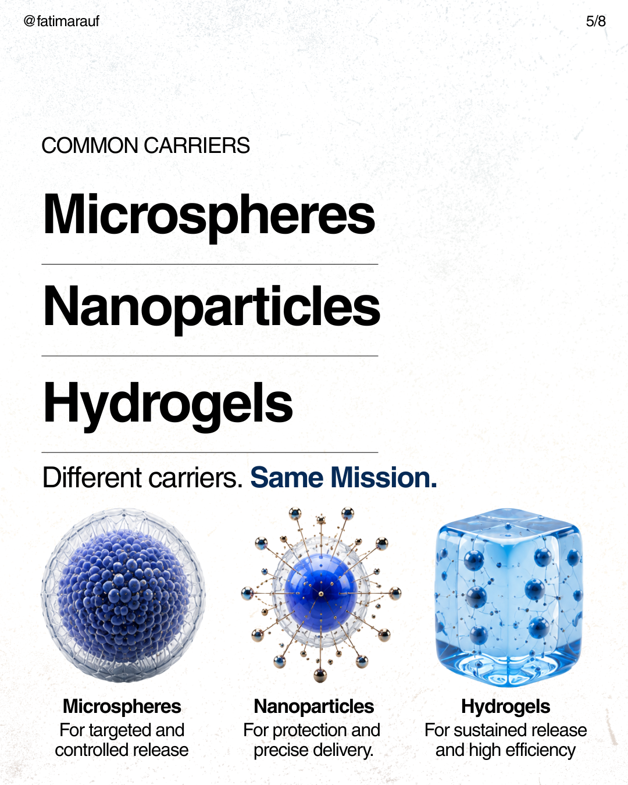
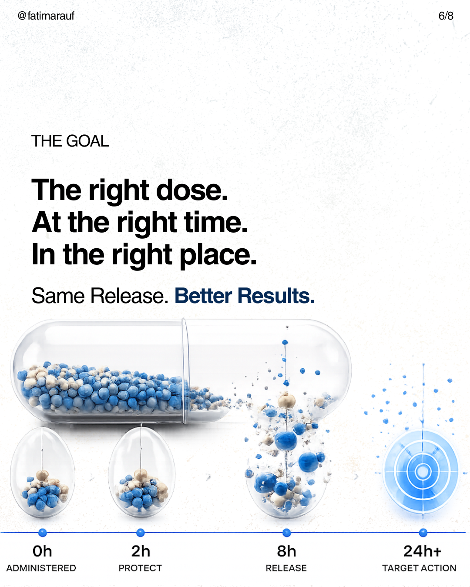
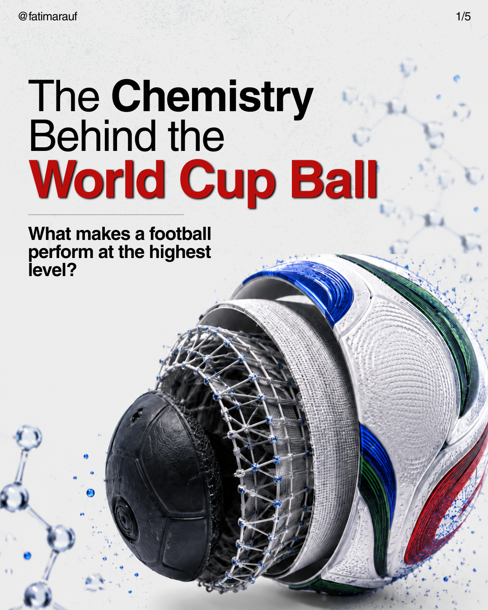
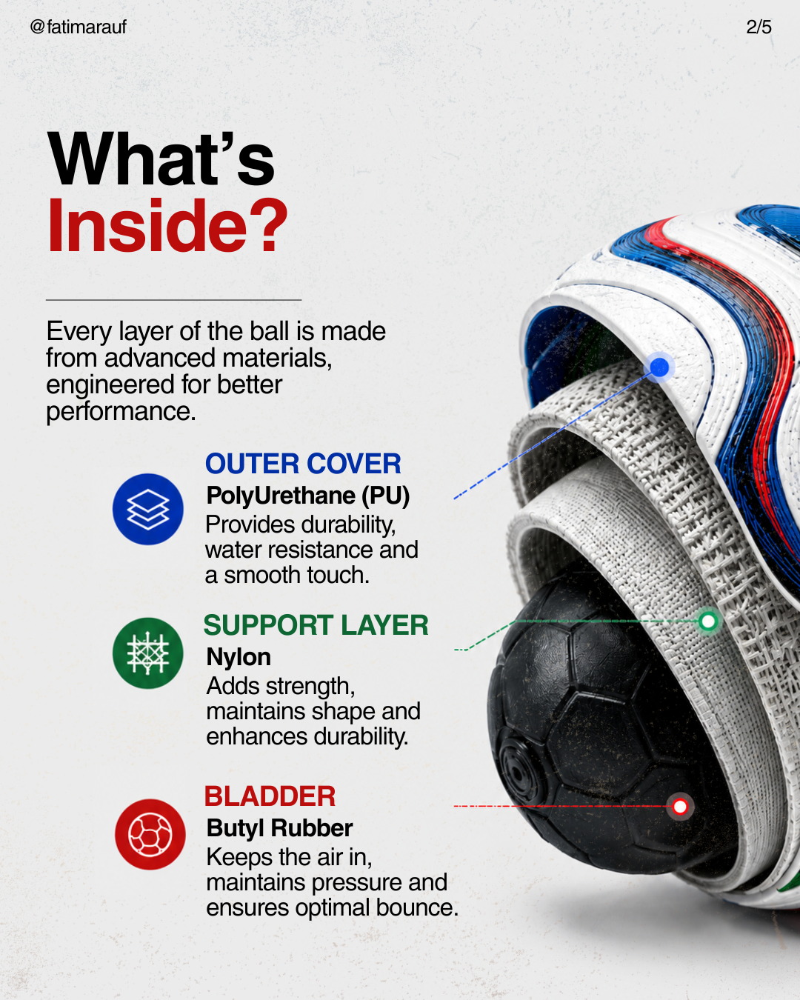
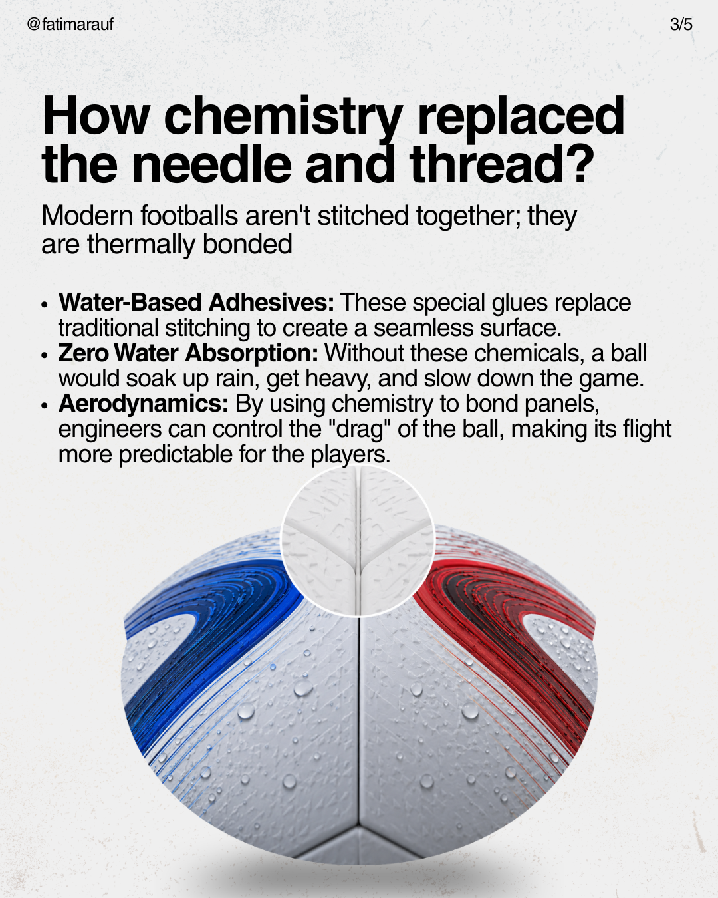

PROJECT / 2026
SCIENCE, MADE VISUAL
Scientific storytelling through editorial design, visual systems and research communication.
FEATURED EDITORIAL / DRUG DELIVERY

Making science
easier to see.
I use visual communication to translate scientific ideas into work that feels clear, engaging and memorable without stripping away the science behind them. This selection brings together research communication, scientific editorial design and chemistry-led visual storytelling.
01 / RESEARCH COMMUNICATION
Turning a research concept into a visual system.



02 / DRUG DELIVERY
A compact visual narrative for targeted treatment.



03 / MATERIALS CHEMISTRY
Finding the chemistry inside something familiar.



← BACK TO WORKFATIMA RAUF / PORTFOLIO